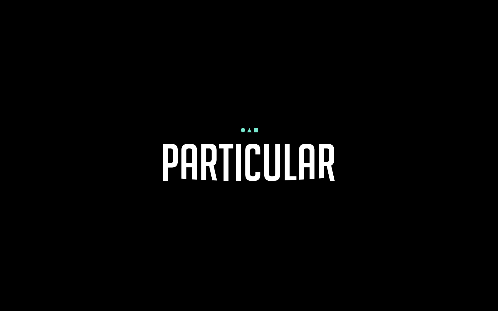
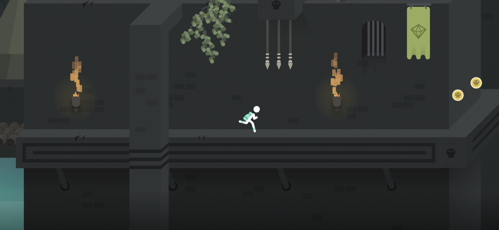
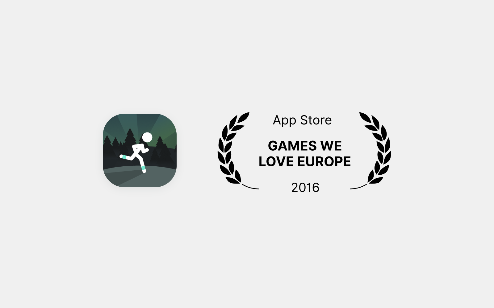
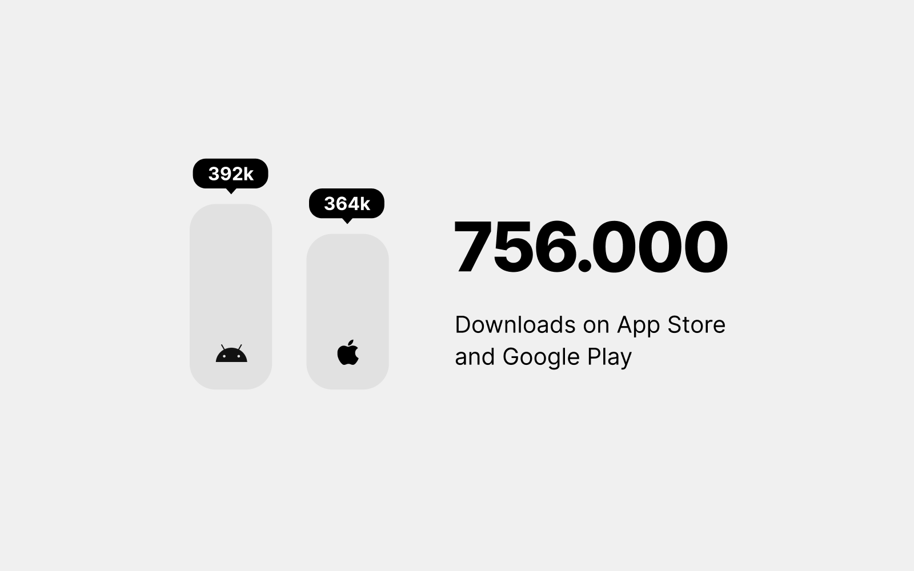

Most of you probably don't know about Particular and its story because I had never decided to publish it – until now – four years later. In this small story, I'll try to summarize how I created Particular and what happened with it, a game that I started building from scratch as a personal project, and how it got featured in all Europe by Apple on its release.
In my life, I have always been curious about everything around me. You might think that I would be most curious about my job (design itself), but that's not true. I am captivated by the whole process of a product – how it works, how to build it all on my own, and all of the aspects included in its development.
I always preferred the hard way. I was already creating some personal websites and projects from scratch, without using already built CMS or similar, because every time I was about to start something new, the main reason was to learn the technologies behind that.
I remember the period when I decided to try installing Unity because I was so attracted by their website, their product, and vastity of things I saw I could create by learning it. For those who don't know what Unity is, it is a Game Engine that allows you to code and design your game and then to publish it on many popular platforms like iOS, Android, Playstation, and Microsoft Xbox.
My immediate idea for this first project was to create a 2D runner, but even if you think that this kind of game concept is too basic, I already had a lot of fresh ideas to include.
In Particular, you are in prison. In the first level, you go out of jail and you have to escape from the building while avoiding enemies and traps.
The game has levels wherein any of them you can run as fast as you can to gain a three stars score. You collect these stars to unlock next levels, and the coins – to get boosts for your play.
The main concept of this game was to play at a fast pace; you run, you get killed, the game immediately restarts from the checkpoint, and repeat, until you reach the end of the level, which was, without dying, an average of 50 seconds of run. The levels in total are about one hundred.
You also had the chance to unlock achievements by completing some levels without dying a single time. As many of my close people told me the first time they tried the game: `This is not that kind of game you can chill with.` And that was the goal - sorry, mum.
Particular took six months of weekends and evenings of work. I warn you; it was truly stressful, especially if you work during the day. I honestly don't know how I managed to finish this project. Every week I was between two completely different moods – one was the desire to abandon this exhausting and stressful project, and the other – the vivid curiosity, new ideas, desire to solve code problems, fix bugs, and improve the game logic. Right in the middle of the development, I understood that I wanted to do something more with this little personal project. My idea wasn't to make money with it or to make it popular. For me, creating an entire game by myself and publishing it was enough to be proud of.
When you face an entirely new world, you also have to figure out how to solve issues you've never seen. I wasn't a newbie with code, neither a developer of course, but I was already able to create some small projects for myself. This little code knowledge helped me a lot to learn faster the language I was using with Unity, C#.
Despite that, the issues I found during the development of Particular were completely new to me. Some of those were - performance issues (including lagging, fps, numbers of triangles in the scene), devices compatibility (especially if we talk about Android), Analytics, SDK for gamification rewards and many more.
Since I was set on Particular being only a personal project, I had not previously planned anything for its release. No social media, no advertising, no boosting.
So after having fun creating the game (or stressing a lot, if you'd like), I released it on the App Store and Play Store with only a simple description and no promotion whatsoever. Well, I did tell my friends and parents about it.. if you could even call that a promotion… Long story short, I wasn't prepared for what was about to come.
I clearly remember that evening; I wasn't looking at the metrics. At that time, I knew that the average of the daily users was about 100, which was more than enough for me, given the fact that I didn't promote the game.
Then suddenly, I received an email from Jessica, who at the time, was the Sales Manager for Unity Ads. She was asking me to use Unity Ads in Particular, but it was the first line of that email that caught my attention the most:
"I saw the game on the App Store, Congrats! They featured the game in the UK right now!"
I ran to check the analytics of the game, and I saw 20K+ live users.
As I previously said, I wasn't prepared at all for something like a featuring, especially one in all of Europe. Immediately after that, my fear was about the chance to have some bugs in the game, that on this large scale, on an app made by a single person, it would have represented a catastrophe. You can test your game countless times by yourself or with your friends, but in numbers, those tests are ridiculous compared to the number of users who were using Particular after the featuring.
Luckily the app was working well, minor bugs, and some crashes on old Android devices.
I had some dear friends and colleagues that helped me to test the game. They gave me support, and they were proud of what I was trying to do. I remember we also created a Telegram group where I was meant to post alpha and beta releases of the game along the weeks. Also, for the soundtrack and the sound effects, I asked help from one of my dear friends and musician. Together we spent a couple of days to find the right mood for the sounds and the music.
In 2019, Particular was considered to join Playond, a mobile games service, like Apple Arcade, if you don't know what it is. You pay a subscription, and you can play all the games you want that are included in the subscription, with no ads and in-apps. Playond acquired Particular. I was happy and proud of this because it meant that the game was still valuable and with potential, even after three years of life.
For sure, if you are a Product Designer, developing a game is an incredible and powerful opportunity to learn beyond the User Experience and User Interface. You better understand the development times, the priorities, and the costs of each feature you want to implement. Even if you worked a lot during the years on User Behaviours and UX, by implementing all of this, you have new points of view, new aspects that you'll consider in the future.
You can also compare in an easier way the benefits and the effort to develop a certain interaction, logic, UI element, or an entire UX flow. You can learn all of these things by researching, but real practice makes a huge difference.
If you are a designer and you have never tried to explore the code part, you should. I truly recommend it. I'm not saying to start with a game, but something simpler that will let you better understand the whole process behind a product.
Recently the license of Particular came back to me. So I published it again just to keep it there, available for everyone. It's a part of the things I'm proud of. I honestly don't think I'm going to develop a full game by myself again. At least not now. I did, however, rediscover not too long ago some game concepts and logics that I had left behind. It would be fun if I restart drawing and illustrating them in my spare time.
If you want to take a look at Particular, you can find it on the App Store and Google Play. I would be happy if you want to share your thoughts about the game or if you had a similar experience. Just DM me on twitter.